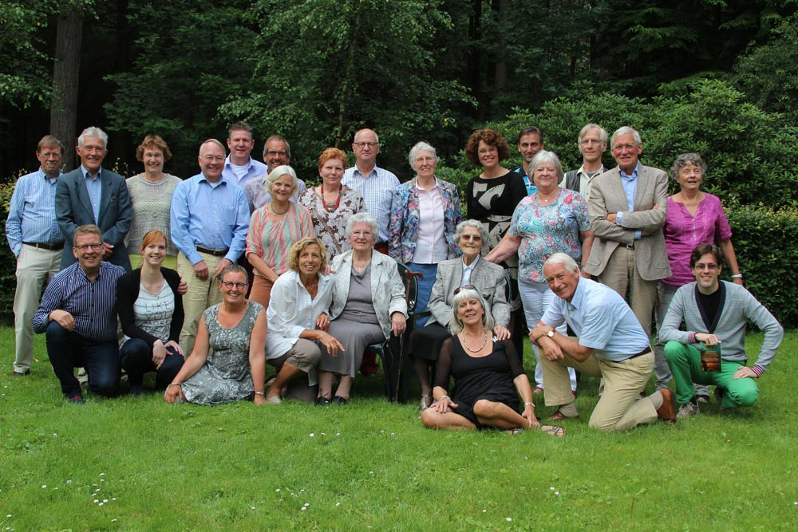

Archief
Verslagen en rapporten uit Rubya
Doe mee
Word Vriend van Rubya
Wij zijn een stichting van vrijwilligers. Uw gift gaat dus voor 100% naar de projecten in Tanzania — en omdat wij ANBI zijn, is uw gift aftrekbaar van de belasting.
Bankrekening
NL66ABNA0624513211t.n.v. Stichting Vrienden van Rubya · BIC ABNANL2A